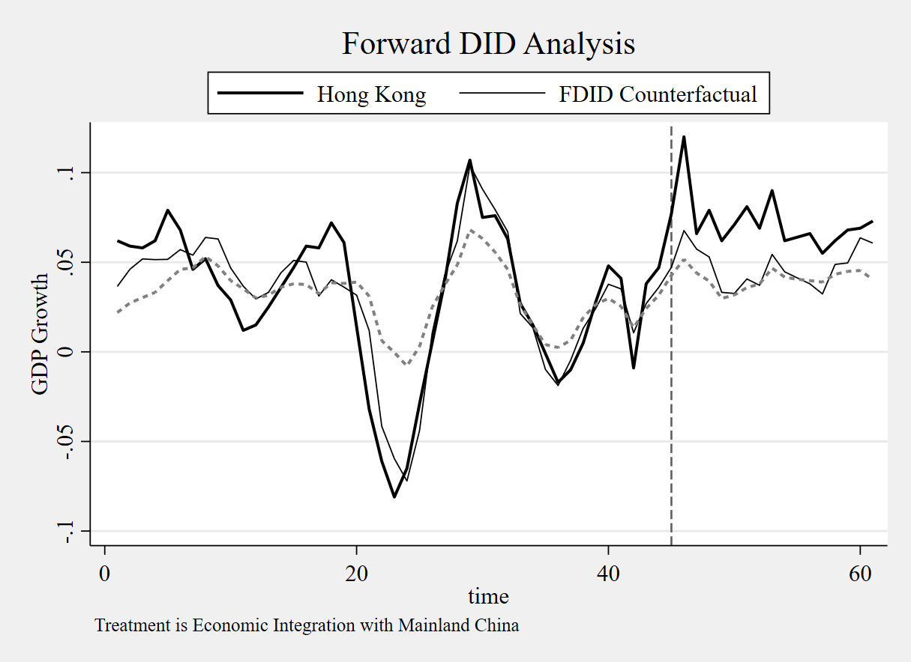
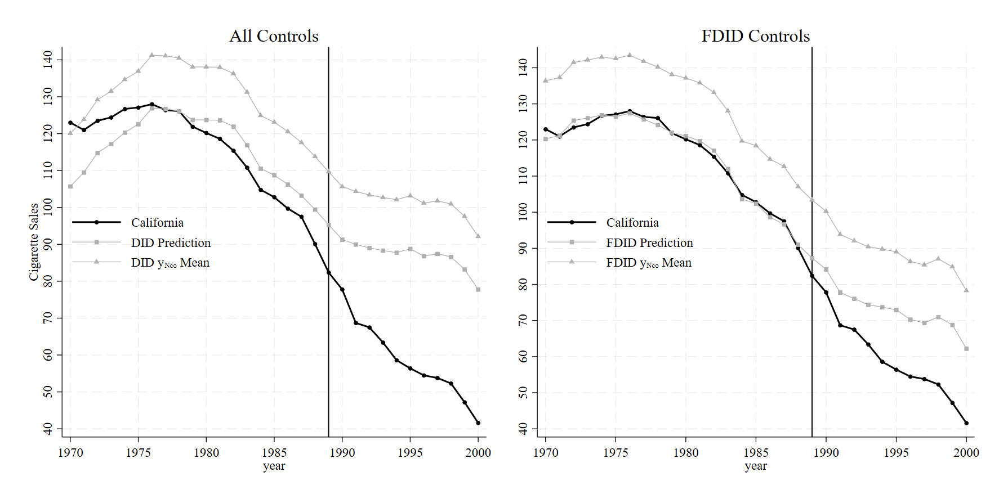

Forward Difference in Differences for Stata Users
Intro to fdid
Here, I cover the forward selection difference-in-differences method for Stata. Note that I already do the equivalent in the Python vignette. So, I will but briefly restate the algorithm and the basic ideas. For the more technical treatment, see my paper. This vignette demonstrates how to use FDID for Stata 16 and up. Users need sdid_event to be installed.
First we install fdid and its help file into Stata like
net inst fdid, from("https://raw.githubusercontent.com/jgreathouse9/FDIDTutorial/main") replaceWe can get the datasets I include like
net get fdid, allThe Model
Setup
We observe \(\mathcal{N} = \{1, 2, \ldots, N\}\) units where \(\mathcal N\) has cardinality \(N = |\mathcal{N}|\). \(j=1\) is treated and controls are \(\mathcal{N}_0 = \mathcal{N} \setminus \{1\}\). Time is indexed by \(t\). Denote pre-post-policy periods as \(\mathcal{T}_1 = \{1, 2, \ldots, T_0\}\) and \(\mathcal{T}_2 = \{T_0+1, \ldots, T\}\), where \(\mathcal{T}= \mathcal{T}_1 \cup \mathcal{T}_2\). The subset of controls we wish to select are \(\widehat{U} \subset \mathcal{N}_0\), or the subset of controls. DiD is estimated like \(y_{1t}=\hat\alpha_{\mathcal{N}_0}+ \bar{y}_{\mathcal{N}_0t} \: t \in \mathcal{T}_1\), where \(\bar{y}_{\mathcal{N}_0t}\coloneqq \frac{1}{N_0} \sum_{j \in \mathcal{N}_0} y_{jt}\). The estimated least-squares intercept is computed like \(\hat\alpha_{\mathcal{N}_0} \coloneqq T_{1}^{-1}\sum_{t \in \mathcal{T}_{1}}\left(y_{1t}-\bar{y}_{\mathcal{N}_0t}\right)\).
The Algorithm
Basically, fdid uses a forward selection algorithm to choose the optimal control group for a single treated unit. Each control unit is used in bivariate linear regression models to choose the best control units. We choose the ideal control from each iteration, and add it to the next set of predictors, choosing the best control from that iteration plus the already selected units. Below I paraphrase from my paper:
Let \(\mathcal{N}_0 = \{i_1 \text{ (Chicago)}, i_2 \text{ (Miami)}, i_3 \text{ (Phoenix)}\}\) be the controls for a generic treated unit. For \(k=1\), we estimate DiD for each control unit in \(\mathcal{N}_0\) individually, yielding pre-treatment \(R^2_{ik}\) values: \(R^2_{1,1} = 0.60\), \(R^2_{2,1} = 0.50\), and \(R^2_{3,1} = 0.23\). Since \(R^2_{1,1} = 0.60\) is the highest, we update the control set to \(\widehat{U}_1 = \{i_1\}\) and \(R_k^{2}=0.60\). This is the first candidate model. For \(k=2\), we estimate two DiD models using \(i_1\) with the remaining controls from \(\{i_2, i_3\}\), yielding \(R^2_{2,2} = 0.88\) and \(R^2_{3,2} = 0.68\). We select \(i_2\) (Miami) and update the control set to \(\widehat{U}_2 = \{i_1, i_2\}\) since \(R^2_{2,2} = 0.88\) is the highest. This is the second candidate model. For \(k=3\), using all controls, we get \(R^2_{3,3} = 0.55\). This is the third candidate model. The final control set is \(\widehat{U}_2 = \{i_1, i_2\}\), as \(\operatorname*{max}_k R^2_k = 0.88\), as this is the canddiate model with the highest R-squared.
Post-selection, estimates FDID like \[ y_{1t}=\hat\alpha_{\widehat{U}}+ \bar{y}_{\widehat{U}t} \quad t \in \mathcal{T}_1 \label{eq:DiD} \] where we now exchange \(\mathcal{N}_0\) for \(\widehat{U}\). Denote the FDID predictions as \(\hat{y}_{1t}^{0}=\hat\alpha_{\widehat{U}}+ \bar{y}_{\widehat{U}t}\), where the pre-treatment periods corresponds to the in-sample fit and the opposite denotes the out-of-sample counterfactual. Our causal estimand is: \(\widehat{ATT}_{\widehat{U}} = \frac{1}{T_2} \sum_{t \in \mathcal{T}_2} \left(y_{1t} - \hat{y}_{1t}^0\right)\), or the average treatment effect on the treated.
HCW
We can use the HCW dataset to demonstrate fdid. We begin by importing the data
u "hcw.dta", clearHere, we study the impact of Hong Kong’s economic integreation. First, we can do xtdescribe, which produces the output
id: 1, 2, ..., 25 n = 25
time: 1, 2, ..., 61 T = 61
Delta(time) = 1 unit
Span(time) = 61 periods
(id*time uniquely identifies each observation)
Distribution of T_i: min 5% 25% 50% 75% 95% max
61 61 61 61 61 61 61
Freq. Percent Cum. | Pattern
---------------------------+---------------------------------------------------------------
25 100.00 100.00 | 1111111111111111111111111111111111111111111111111111111111111
---------------------------+---------------------------------------------------------------
25 100.00 | XXXXXXXXXXXXXXXXXXXXXXXXXXXXXXXXXXXXXXXXXXXXXXXXXXXXXXXXXXXXXWe see that \(T=61\). When we do list if treat==1, we get the output
time state gdp id treat polint
45 hongkong .077 9 1 1
46 hongkong .12 9 1 1
47 hongkong .066 9 1 1
48 hongkong .079 9 1 1
49 hongkong .062 9 1 1
50 hongkong .071 9 1 1
51 hongkong .081 9 1 1
52 hongkong .069 9 1 1
53 hongkong .09 9 1 1
54 hongkong .062 9 1 1
55 hongkong .064 9 1 1
56 hongkong .066 9 1 1
57 hongkong .055 9 1 1
58 hongkong .062 9 1 1
59 hongkong .068 9 1 1
60 hongkong .069 9 1 1
61 hongkong .073 9 1 1 We have 44 pretreatment periods and 17 post-treatment periods. Our goal is to estimate the impact for those final 17 periods. From the xtdescribe output, we see that we have 24 control units. To estimate fdid, we simply do
fdid gdp, tr(treat) unitnames(state) gr1opts(title(FDID Results))We specify the outcome of interest as gdp and we specify the treatment as treat. We use the strings of the state variable to define the names of our units, sicne they are strings. This syntax produces the table
Forward Difference-in-Differences | T0 R2: 0.843 T0 RMSE: 0.016
-----------------------------------------------------------------------------
gdp | ATT Std. Err. t P>|t| [95% Conf. Interval]
-------------+---------------------------------------------------------------
treat | 0.02540 0.00462 5.49 0.000 0.01634 0.03447
-----------------------------------------------------------------------------
Treated Unit: hongkong
FDID selects philippines, singapore, thailand, norway, mexico, korea, indonesia, newzealand, malaysia, as the optimal donors.
See Li (2024) for technical details.
If we wish to see the returned results, we can do
ereturn list
macros:
e(U) : "philippines, singapore, thailand, norway, mexico, korea, indonesia, newzealand, malaysia,"
e(properties) : "b V"
e(depvar) : "gdp"
matrices:
e(b) : 1 x 1
e(V) : 1 x 1
e(series) : 61 x 9
e(setting) : 1 x 6
e(results) : 2 x 7
e(dyneff) : 61 x 6The e(series) is a matrix containing the observed and counterfactual values, event time, individual treatment effects. Naturally, the other statistics pertain to the total number of controls, the number of controls selected, as well as inferential statistics.
mat l e(results)
e(results)[2,7]
ATT PATT SE t LB UB R2
FDID .02540494 53.843074 .00462405 5.4940862 .01634196 .03446791 .8427835
DID .03172116 77.6203 .00298081 10.641796 .02556907 .03787324 .5046Here DID uses the robust standard error as estimated by xtdidregress. We can clearly see that the pre-intervention \(R^2\) for the selected control group of FDID is much higher than the DID method, suggesting that the parallel trends assumption for Forward DID holds compared to when we use all controls, as DID does.
Proposition 99
Next, I’d like to replicate one of the more classic papers in synthetic control methods, the case of Proposition 99 for California. Prop 99 was an anti-tobacco campaign that sought to reduce the rate of smoking in the population via education, awareness, and taxation. To run this, we do
clear *
cls
u "smoking.dta", clearWhen we do xtdescribe, we get
id: 1, 2, ..., 39 n = 39
year: 1970, 1971, ..., 2000 T = 31
Delta(year) = 1 year
Span(year) = 31 periods
(id*year uniquely identifies each observation)
Distribution of T_i: min 5% 25% 50% 75% 95% max
31 31 31 31 31 31 31
Freq. Percent Cum. | Pattern
---------------------------+---------------------------------
39 100.00 100.00 | 1111111111111111111111111111111
---------------------------+---------------------------------
39 100.00 | XXXXXXXXXXXXXXXXXXXXXXXXXXXXXXXWe can see we have 38 controls. list if treat==1 returns the output
state year cigsale lnincome beer age15~24 retprice treated id
California 1989 82.4 10.14231 23.7 .1535246 126.4 1 3
California 1990 77.8 10.14162 23.8 .149523 163.8 1 3
California 1991 68.7 10.11071 22.3 . 186.8 1 3
California 1992 67.5 10.11494 21.3 . 201.9 1 3
California 1993 63.4 10.0985 20.8 . 205.1 1 3
California 1994 58.6 10.09951 20.1 . 190.3 1 3
California 1995 56.4 10.15592 19.7 . 195.1 1 3
California 1996 54.5 10.17864 19.1 . 197.9 1 3
California 1997 53.8 10.17519 19.5 . 200.3 1 3
California 1998 52.3 . . . 207.8 1 3
California 1999 47.2 . . . 224.9 1 3
California 2000 41.6 . . . 351.2 1 3 We can see that treatment begins in 1989, continuing until the end of the study period. We estimate the effect like
fdid cigsale, tr(treated) unitnames(state)which returns the table
Forward Difference-in-Differences T0 R2: 0.988 T0 RMSE: 1.282
-----------------------------------------------------------------------------------------
cigsale | ATT Std. Err. t P>|t| [95% Conf. Interval]
-------------+---------------------------------------------------------------------------
treated | -13.64671 0.46016 29.66 0.000 -14.54861 -12.74481
-----------------------------------------------------------------------------------------
Treated Unit: California
FDID selects Montana, Colorado, Nevada, Connecticut, as the optimal donors.
See Li (2024) for technical details.With these results, we may produce the plot
svmat e(series), names(col)
tsset year
lab var cigsale3 "California"
lab var cf3 "FDID"
lab var cfdd3 "DID"
lab var ymeandid "DID Control Mean"
lab var ymeanfdid "FDID Control Mean"
lab var year "Year"
twoway (tsline cigsale3) ///
(tsline cfdd3, lcolor(black) lwidth(thick) lpattern(dash)) ///
(tsline ymeandid, lcolor(black) lwidth(thick) lpattern(solid)), ///
scheme(sj) name(did, replace) ///
yti(Cigarette Consumption per Capita) tli(1989) legend(ring(0) pos(7) col(1) size(large)) ///
ti(Uses all controls)
twoway (tsline cigsale3) ///
(tsline cf3,lcolor(gs6) lwidth(thick) lpattern(longdash)) ///
(tsline ymeanfdid, lcolor(gs6) lwidth(thick) lpattern(solid)), ///
scheme(sj) name(fdid, replace) tli(1989) legend(ring(0) pos(7) col(1) size(large)) ///
ti(Uses 4 controls)
graph combine did fdid, xsize(8)
The R-squared of DID here is 0.604, versus FDID’s R-squared of 0.988. This naturally has real implications for the analysis’ findings. Because the fit for DID in the pre-intervention period is so poor (as a result of non-parallel trends holding across all control units), the DID method badly overestimates the causal effect, returning an ATT of -27.349.
FDID’s control group seems much more parallel to the pre-treatment trend of California. Its pre-intervention R-squared is higher than DID, meaning that the parallel trends assumption is much more likely to hold for FDID in this instance relative to DID. The effect sizes also differ, with FDID returning an ATT of -13.647.
To put this another way, the ATT of FDID is basically half of the DID estimate due to parallel trends bias from the original DID method. This is a colossal reduction of effect. Also of interest is that FDID selects 4 control states which happen to be the exact same states as the original synthetic control method selected. On top of this, we can also see that FDID gets these results without needing to use retail price of cigarettes, age, income, taxation, and outcome lags to attain what is essentially the same results of other synthetic control methods (which tend to vary between -13 and -19, depending on which flavor of SCM we use).
Of course, FDID assumes that a uniformly weighted average is the ideal way to model the counterfactual, but the point here is that we can get very similar results to the findings of the original model using a relatively simpler estimator which also happens to be qualitatively similar. An added benefit of DID is that inference is more straightforward compared to synthetic controls. In the staggered adoption case, we simply estimate one ATT per treated unit (using the never treated units as controls) and average the effect sizes together. Okay, so that’s it for the vignette. No doubt people will have questions, suggestions, ideas, or errors to report, concerns, so you may contact me as ususal.
Contact
- Jared Greathouse: jgreathouse3@student.gsu.edu (see my website)